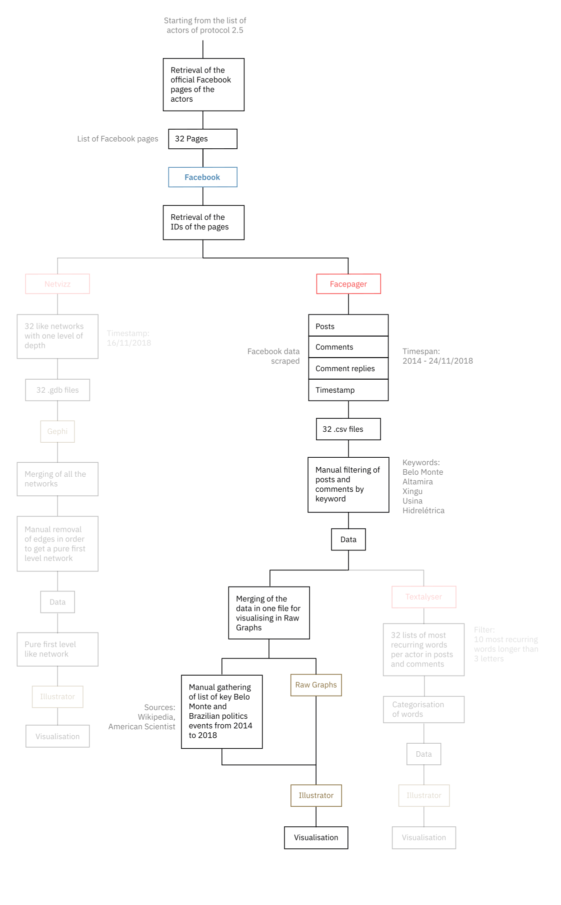

Description
The Area Graph shows how much the actors’ Facebook pages are posting about Belo Monte in comparison to how much their public is discussing about it in the comments starting from 2014 to nowadays. The volume of the debate is measurable also in comparison to the key events regarding Belo Monte’s history and Brazilian political elections.
There have been moments in the past four years where the debate was more lively, such as the months surrounding the dam’s inauguration. In that period, generally both actors and public were talking about it. The trend is mostly visible with the UHE Belo Monte Facebook page. At the same time, Greenpeace Brazil followers were mentioning the topic a lot in comments to its posts, even if those posts were not related to Belo Monte Dam. The peak in the comments of Greenpeace Brazile that coincides exactly with the inauguration day is striking.
Another finding is that politicians are not talking directly about the issue in their posts, but people are mentioning it a lot in the comments. In the page of Dilma Rousseff, for instance, there are several peaks in the Area Graph of the comments while on the contrary almost none in the posts, especially until May 2016 while she was still president. Interestingly, Celebrities and their public are not talking at all about the topic, meaning that their activism is probably directed through other platforms.
In general, it is noted that the public of the pages is more active in the debate than the actors themselves. UHE Belo Monte is the only outlier, since by being the official page of the dam nearly every post is related to the issue. The general interest of the public in Belo Monte, however, arose during the last election campaign in the fall of 2018, with peaks mainly visible in comments of Governmental Institutions, such as FUNAI, and Greenpeace Brazil.
Protocol

Starting from the list of pages of the previous protocol, the current protocol was designed to extract the activity of the pinpointed actors and their public about Belo Monte on Facebook. The same IDs used in protocol 3.1. were used to scrape all the posts, comments and replies to the comments of every page using Facepager starting from the beginning of 2014 to the 24th of November 2018. The 32 resulting .csv files were filtered through the use of keywords in order to obtain only the relevant posts and comments. The keywords used were “Belo Monte”, “Altamira”, “Xingu”, “usina” (dam in Brazilian), and “hìdrelétrica” (hydroelectric in Portuguese). While the first three key phrases were only used to frame the issue specifically, as suggested by the previous findings, the posts and comments containing the keywords “usina” and “hidrelétrica” were all manually checked in order to avoid data noise. The criteria used to validate a post or comment was the following: if a post contained one of the keywords all of the comments were automatically validated as relevant since they were triggered by a relevant post, while only the comments to non-relevant posts containing the keywords were validated. The collected data was merged in one file optimised for Raw Graphs in order to generate an Area Graph, which was then graphically enhanced in Adobe Illustrator. Key events about the dam and the Brazilian general elections were extracted from external sources such as Wikipedia and Americancientist.com.
Data
Data Source: FacePager, Wikipedia, American Scientist
Timestamp: 24/11/2018
View Data (2Mb)
The dataset contains all the posts, comments and replies to the comments made by the selected specific actors’ Facebook pages and their publics concerning the Belo Monte Dam. For each actor there is a specific TSV file with a column for the three levels of text content: post, comment and reply, where the parent object is repeated for everyone of its chidren.